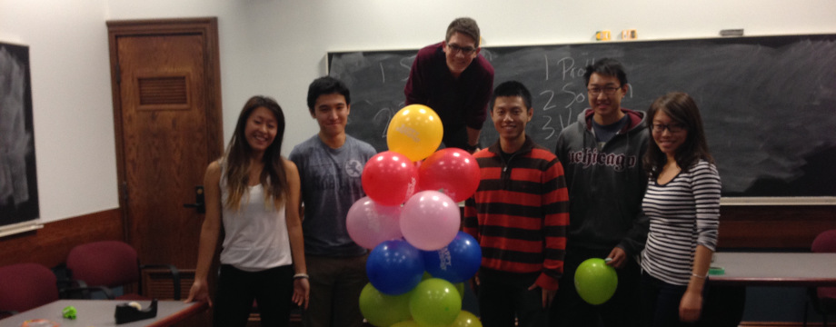
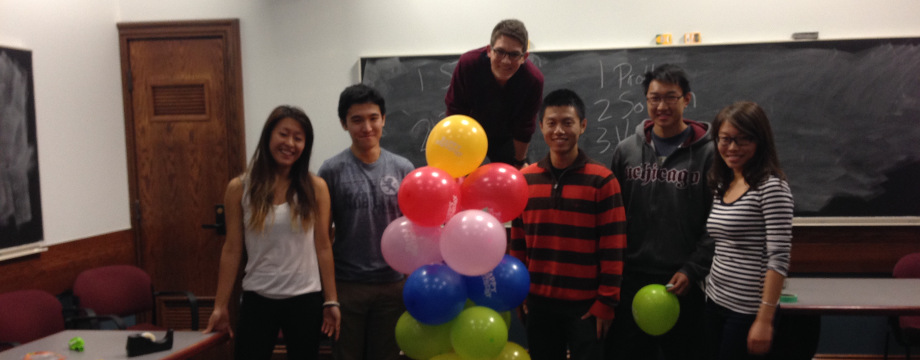

INNOVATE | LEAD | CONNECT
The International Leadership Council is a recognized student organization (RSO) and alumni network at the University of Chicago dedicated to finance & business education.
WHO WE ARE
The International Leadership Council is a University of Chicago student organization founded in 2003 by Karan Goel to connect business oriented students and provide a platform for the sharing of knowledge and ideas. Over the past fourteen years, ILC has expanded to provide members with three specialized divisions: Finance, Entrepreneurship, and Technology.
Finance offers a setting to gain fundamentals in financial theory, discuss market movements, and practice industry research & analysis.
Learn More!Entrepreneurship provides its members with hands-on experience in the business and logistics of creating and maintaining a startup.
Learn More!Technology offers workshops, modules, and projects to develop full-stack skills, often teaming up with entrepreneurship division projects as well.
Learn More!OUR PRINCIPLES
Every new generation brings its own unique flavor to ILC, but a few principles stretch across all divisions and back to the club's founding.
Think Tank: This phrase used to describe ILC at its inception still applies today. Every division encourages the development and sharing of new ideas, whether in the form of stock pitches, startup proposals, or tech talks. The group’s rigorous discussion leads to adoption of new projects, strategies, and techniques that allows ILC to continue evolving.
Developed Skill Set: True competence demands both hard and soft skills - to know when to look towards the statistics and when to follow your instincts. ILC is committed to endowing its members with both the technical know-how and the macroscopic understanding to make truly informed decisions.
Mentorship: Each year’s analyst class brings great new minds to the club and the leadership makes sure that everyone has the foundation of knowledge and experience they need to contribute to their fullest. The continual mentoring of new members benefits all and creates lasting personal connections.
Purposeful Network: We use our network to help each other succeed, to provide support and advice when needed, and to stay in contact with our graduated members.